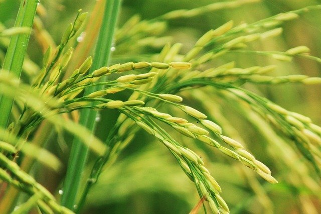

花粉 イネ科
カモガヤやイネ科の花粉は花粉症の原因となり４月〜１０月頃花粉を飛散させます。
カモガヤ花粉症は重複感作が多く、スギ花粉症の半数がカモガヤにも感作しているとの報告があります。河川敷や空き地・道端と、広く身近な場所に自生しています。スギ花粉などの樹木に比べ花粉の飛散距離が数十メートルと近いため、近づかないことで回避が可能です。
カビ
カビアレルゲンは梅雨時期と秋に増加します。
カモガヤ花粉症は重複感作が多く、スギ花粉症の半数がカモガヤにも感作しているとの報告があります。河川敷や空き地・道端と、広く身近な場所に自生しています。スギ花粉などの樹木に比べ花粉の飛散距離が数十メートルと近いため、近づかないことで回避が可能です。
昆虫
ガは、春から秋にかけて(特に秋に多く)屋内外で見られます。
カモガヤ花粉症は重複感作が多く、スギ花粉症の半数がカモガヤにも感作しているとの報告があります。河川敷や空き地・道端と、広く身近な場所に自生しています。スギ花粉などの樹木に比べ花粉の飛散距離が数十メートルと近いため、近づかないことで回避が可能です。